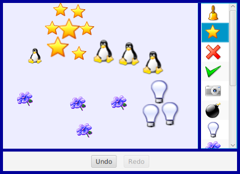
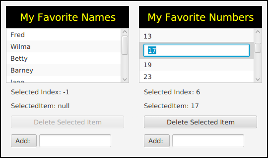
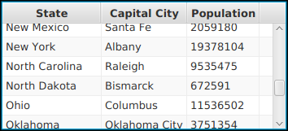
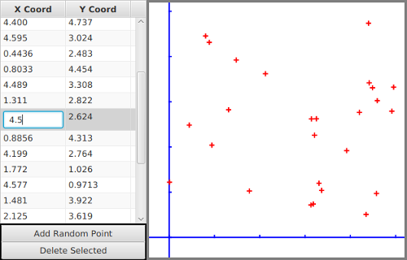

Complex Components and MVC
There is a lot more complexity than we have seen so far lurking in the JavaFX API. However, a lot of that complexity works to your benefit as a programmer, since a lot of it is hidden in typical uses of JavaFX components. You don't have to know about the most complex details of controls in order to use them effectively in most programs.
JavaFX defines several component classes that are much more complex than those we have looked at, but even the most complex components are not very difficult to use for many purposes. In this section, we'll look at components that support display and manipulation of lists and tables. To use these complex components effectively, it's helpful to know something about the Model-View-Controller pattern that is used as a basis for the design of many GUI components. That pattern is discussed later in this section.
There are a number of JavaFX controls that are not covered in this book. Some useful ones that you might want to look into include: TabbedPane, SplitPane, Tree, ProgressBar, and various specialized input controls such as ColorPicker, DatePicker, PasswordField, and Spinner.
We start this section with a short example of writing a custom control—something that you might consider when even the large variety of components that are already defined in JavaFX don't do quite what you want (or when they do too much, and you want something simpler).
A Simple Custom Component
JavaFX's standard component classes are usually all you need to construct a user interface. At some point, however, you might need something a bit different. In that case, you can consider writing your own component class, by building on one of the components that JavaFX does provide or on the basic Control class that serves as the base class for all controls.
For example, suppose I have a need for a "stopwatch" control. When the user clicks on the stopwatch, I want it to start timing. When the user clicks again, I want it to display the elapsed time since the first click. The textual display can be done with a Label, but we want a Label that can respond to mouse clicks. We can get this behavior by defining a StopWatchLabel component as a subclass of the Label class. A StopWatchLabel object will listen for mouse clicks on itself. The first time the user clicks, it will change its display to "Timing..." and remember the time when the click occurred. When the user clicks again, it will check the time again, and it will compute and display the elapsed time. (Of course, I don't necessarily have to define a subclass. I could use a regular label in my program, set up a listener to respond to mouse events on the label, and let the program do the work of keeping track of the time and changing the text displayed on the label. However, by writing a new class, I have something that can be reused in other projects. I also have all the code involved in the stopwatch function collected together neatly in one place. For more complicated components, both of these considerations are very important.)
The StopWatchLabel class is not very hard to write. I need an instance variable to record the time when the user starts the stopwatch. In the mouse event handling method that responds to mouse clicks on the stopwatch, I need to know whether the timer is being started or stopped, so I need a boolean instance variable, running, to keep track of this aspect of the component's state. We can use the method System.currentTimeMillis() to get the current time, in milliseconds, as a value of type long. When the timer is started, we can store the current time in an instance variable, startTime. When the timer is stopped, we can use the current time and the start time to compute the elapsed time that the timer has been running. The complete StopWatch class is very short:
import javafx.scene.control.Label;
/**
* A custom component that acts as a simple stop-watch. When the user
* clicks on it, this component starts timing. When the user clicks again,
* it displays the time between the two clicks. Clicking a third time
* starts another timer, etc. While it is timing, the label just
* displays the message "Timing....".
*/
public class StopWatchLabel extends Label {
private long startTime; // Start time of timer.
// (Time is measured in milliseconds.)
private boolean running; // True when the timer is running.
/**
* Constructor sets initial text on the label to
* "Click to start timer." and sets up a mouse event
* handler so the label can respond to clicks.
*/
public StopWatchLabel() {
super(" Click to start timer. ");
setOnMousePressed( e -> setRunning( !running ) );
}
/**
* Tells whether the timer is currently running.
*/
public boolean isRunning() {
return running;
}
/**
* Sets the timer to be running or stopped, and changes the text that
* is shown on the label. (This method should be called on the JavaFX
* application thread.)
* @param running says whether the timer should be running; if this
* is equal to the current state, nothing is done.
*/
public void setRunning( boolean running ) {
if (this.running == running)
return;
this.running = running;
if (running == true) {
// Record the time and start the timer.
startTime = System.currentTimeMillis();
setText("Timing....");
}
else {
// Stop the timer. Compute the elapsed time since the
// timer was started and display it.
long endTime = System.currentTimeMillis();
double seconds = (endTime - startTime) / 1000.0;
setText( String.format("Time: %1.3f seconds", seconds) );
}
}
} // end StopWatchLabelDon't forget that since StopWatchLabel is a subclass of Label, you can do anything with a StopWatchLabel that you can do with a Label. You can add it to a container. You can set its font, text color, max and preferred size, and CSS style. You can set the text that it displays (although this would interfere with its stopwatch function).
StopWatchLabel.java is not an application and cannot be run on its own. The very short program TestStopWatch.java shows a StopWatchLabel, and it sets several of the label's properties to improve the appearance.
The MVC Pattern
One of the principles of object-oriented design is division of responsibilities. Ideally, an object should have a single, clearly defined role, with a limited realm of responsibility. One application of this principle to the design of graphical user interfaces is the MVC pattern. "MVC" stands for "Model-View-Controller" and refers to three different realms of responsibility in the design of a graphical user interface.
When the MVC pattern is applied to a component, the model consists of the data that represents the current state of the component. The view is simply the visual presentation of the component on the screen. And the controller is the aspect of the component that carries out actions in response to events generated by the user (or by other sources such as timers). The idea is to assign responsibility for the model, the view, and the controller to different objects.
The view is the easiest part of the MVC pattern to understand. It is often represented by the component object itself, and its responsibility is to draw the component on the screen. In doing this, of course, it has to consult the model, since the model represents the state of the component, and that state can determine what appears on the screen. To get at the model data—which is stored in a separate object according to the MVC pattern—the component object needs to keep a reference to the model object. Furthermore, when the model changes, the view often needs to be redrawn to reflect the changed state. The component needs some way of knowing when changes in the model occur. Typically, in Java, this is done with events and listeners. The model object is set up to generate events when its data changes. The view object registers itself as a listener for those events. When the model changes, an event is generated, the view is notified of that event, and the view responds by updating its appearance on the screen.
When MVC is used for JavaFX components, the controller is generally not so well defined as the model and view, and its responsibilities are often split among several objects. The controller might include mouse and keyboard listeners that respond to user events on the view, as well as listeners for other high-level events, such as those from a button or slider, that affect the state of the component. Usually, the controller responds to events by making modifications to the model, and the view is changed only indirectly, in response to the changes in the model.
The MVC pattern is used in many places in the design of JavaFX, even when the terms "model" and "view" are not used. The whole idea of observable properties (Subsection 13.1.1) is a way of implementing the idea of a model that is separate from the view, although when properties are used, the model can be spread over many different objects. For the list and table controls that we will look at next, the model and view are somewhat more explicit.
ListView and ComboBox
A ListView is a control that represents a list of items that can be selected by the user. It is also possible to let the user edit items in the list. The sample program SillyStamper.java allows the user to select an icon (that is, a small image) in a ListView of icons. The user selects an icon in the list by clicking on it. The selected icon can be "stamped" onto a canvas by clicking on the canvas. Shift-clicking adds a larger version of the image to the canvas. (The icons in this program are from the KDE desktop project.) Here is a picture of the program with several icons already stamped onto the drawing area and with the "star" icon selected in the list:

ListView is defined in package javafx.scene.control. It is a parameterized type, where the type parameter indicates what type of object can be displayed in the list. The most common type is probably ListView<String>, but in the sample program, it's ListView<ImageView>. A ListView can display Strings and Nodes directly. When used with objects of other types, the default is to display the string representation of the object, as returned by the toString() method (which is often not very useful).
The items in a ListView<T> are stored in an ObservableList<T>. The list of items is part of the model for the ListView. The list for a listView can be accessed as listView.getItems(). When items are added to this list or deleted from the list, the list view is automatically updated to reflect the change.
In the SillyStamper program, the list is static. That is, no changes are made to the list after it has been created, and the user cannot edit the list. The images for the icons are read from resource files, and each Image is wrapped in an ImageView (Subsection 6.4.1), which is added to the list of items in the ListView. The list is constructed in the following method, which is called in the program's start() method:
private ListView<ImageView> createIconList() {
String[] iconNames = new String[] {
// names of image resource file, in directory stamper_icons
"icon5.png", "icon7.png", "icon8.png", "icon9.png", "icon10.png",
"icon11.png", "icon24.png", "icon25.png", "icon26.png",
"icon31.png", "icon33.png", "icon34.png"
};
iconImages = new Image[iconNames.length]; // Used for drawing the icons.
ListView<ImageView> list = new ListView<>();
list.setPrefWidth(80);
list.setPrefHeight(100);
for (int i = 0; i < iconNames.length; i++) {
Image icon = new Image("stamper_icons/" + iconNames[i]);
iconImages[i] = icon;
list.getItems().add( new ImageView(icon) );
}
list.getSelectionModel().select(0); // Select the first item in the list.
return list;
}This method sets a preferred width and height for the list. The default preferred size for a list seems to be about 200-by-400, no matter what it contains. The icon list needs a much smaller width. The preferred height is set to a small value, but in this program it will grow to fill the available space in the "right" position of the BorderPane that fills the window. The default preferred height would have forced the container to be bigger than I wanted.
The other point of interest is the use of the "selection model" of the list. The selection model is the part of the model that records which items are selected in the list. By default, at most one item can be selected in a list, which is the correct behavior for this program. However, it would be possible to allow multiple items to be selected at the same time by calling
list.getSelectionModel().setSelectionMode(SelectionMode.MULTIPLE);With the default single selection mode, when the user selects an item, the previously selected item, if any, is deselected. The user can select an item by clicking it, and the program can set the selection by calling list.getSelectionModel().select(index). The parameter is the index of the item in the list, with numbering starting from zero as usual. If index is -1, than no item in the list is selected. The selected item in the list is highlighted in the list view. The list view listens for changes in the selection model. When the user clicks an item, a mouse listener (which is a built-in part of the controller for the list) changes the selection model. When that happens, the list view is notified of the change and updates its appearance to reflect the fact that a different item is now selected. A program can find out which item is currently selected by calling
list.getSelectionModel().getSelectedIndex()In SillyStamper.java, this method is used when the user clicks on the canvas, to find out which icon should be stamped into the picture.
The list in SillyStamper.java is not editable. Our second sample program, EditListDemo.java, shows two lists that can be edited by the user. One is a list of strings and one is a list of numbers. The user can initiate editing of an item by double-clicking it, or simply by clicking it if it is already selected. The user finishes the edit by pressing return or by hitting the escape key to cancel the edit. Selecting another item in the list will also cancel the edit.

There are a few things that you need to do if you want the user to be able to edit the items in a ListView. The list must be made editable by calling
list.setEditable(true);However, that by itself is not enough. The individual cells in the list must also be editable. The term "cell" refers to an area in a list that displays one item. A list cell is an object that is responsible for displaying the item and, optionally, implementing user editing of the item. Default list cells are not editable.
A ListView uses a cell factory to create list cell objects. The cell factory is another object that is responsible for creating cells. To get a different kind of cell, you have to provide a different cell factory for the list. (This follows something called the "factory pattern." By using a a factory object to create cells, the cells can be customized without changing the ListView source code. You simply have to install a new cell factory.)
Writing cell factories is not a trivial task, but JavaFX has several standard cell factories. If listView is of type ListView<String>, you can install a cell factory that makes editable cells simply by calling
listView.setCellFactory( TextFieldListCell.forListView() );The method TextFieldListCell.forListView() returns a cell factory that creates cells that can display and edit strings. When the cell is simply displaying the string, it actually uses a Label for the display. When the item is being edited, it is displayed as a TextField.
That's all you need to know to make an editable list of strings. There are other item types for which it is natural to display the item as a string and to use a TextField for editing the item. That includes numbers, single character values, dates, and times. However, when the items are not strings, there has to be some way to convert between items and their string representations. Again, JavaFX makes things reasonably easy in the common cases: It provides standard converters for all of the types mentioned above. For example, if intList is an editable ListType<Integer>, you can install an appropriate cell factory with
intView.setCellFactory(
TextFieldListCell.forListView( new IntegerStringConverter() ) );The parameter to forListView is an object that can convert between integers and their string representations. As it happens I was not completely satisfied with the standard converter, since it didn't handle illegal inputs in the text field very well, so for the list of integers in the sample program EditListDemo.java, I wrote my own converter and used it create the cell factory for the list:
StringConverter<Integer> myConverter = new StringConverter<Integer>() {
// This custom string converter will convert a bad input string to
// null, instead of just failing. And it will display a null value
// as "Bad Value" and an empty string value as 0.
public Integer fromString(String s) {
// Convert a string to an integer.
if (s == null || s.trim().length() == 0)
return 0;
try {
return Integer.parseInt(s);
}
catch (NumberFormatException e) {
return null;
}
}
public String toString(Integer n) {
// Convert an integer to a String.
if (n == null)
return "Bad Value";
return n.toString();
}
};
listView.setCellFactory( TextFieldListCell.forListView( myConverter ) );As you can see, a StringConverter just needs to define two functions, fromString() and toString().
Standard string converters can be found in package javafx.util.converters, and the factory class TextFieldListCell is in package javafx.scene.control.cell. There are also similar classes for use with cells in tables, which we will need below.
In addition to the lists themselves in the sample program, a few interesting things are done with labels and buttons, by using observable properties of the ListView's model, as discussed in Subsection 13.1.2. For example, there are labels that show the selected index and the selected item in the list. This is coded by binding the text property of the label with a property of the list's selection model:
Label selectedIndexLabel = new Label();
selectedIndexLabel.textProperty().bind(
listView.getSelectionModel()
.selectedIndexProperty()
.asString("Selected Index: %d") );
Label selectedNumberLabel = new Label();
selectedNumberLabel.textProperty().bind(
listView.getSelectionModel()
.selectedItemProperty()
.asString("SelectedItem: %s") );And the button for deleting the selected item from the list should be enabled only when there is actually a selected item. This is coded by binding the disable property of the button:
deleteNumberButton.disableProperty().bind(
listView.getSelectionModel()
.selectedIndexProperty()
.isEqualTo(-1) );In effect, the labels and button are being used as alternative views of the same selection model that is used by the list. This is a major feature of the MVC pattern: There can be multiple views of the same model object. The views listen for changes in the model. When the model changes, the views are notified of the change and update themselves to reflect the new state of the model.
There is also an "Add" button that adds an item to the list. This uses another part of the ListView model. The item is actually added to the ObservableList that holds the items. Since the ListView listens for changes in that list, it will be notified of the change and will update itself to show the new item in the visible on-screen view of the list. Beyond adding the item to the observable list, no other action is needed in the program to get the item to appear on the screen.
We can look briefly at another control, ComboBox, that bears a lot of similarities to ListView. In fact, a ComboBox is basically a list view in which only the selected item is normally visible. When the user clicks on a combo box, the full list of items pops up, and the user can select an item from the list. In fact, a ComboBox actually uses a ListView to show the items in the pop-up list. You have seen combo boxes used as pop-up menus in some examples, starting with GUIDemo.java all the way back in Section 1.6. Like ListView, ComboBox is a parameterized type. Although other item types are supported (using cell factories and string converters), String is the most common type for the items. Creating a combo box and managing the selection is similar to working with ListView. For example,
ComboBox<String> flavors = new ComboBox<>();
flavors.getItems().addAll("Vanilla", "Chocolate", "Strawberry", "Pistachio");
flavors.getSelectionModel().select(0);It is possible to set a combo box to be editable (and no special cell factory is needed for that, as long as the items are strings). An editable combo box is like a strange combination of text field and list view. Instead of using a label to show the selected item, the combo box uses a text field. The user can edit the value in the text field, and the modified value becomes the selected value in the combo box. However, the original value of the modified item is not removed from the list; the new item is just added. And the new item does not become a permanent part of the list. In the above example, the effect of saying flavors.setEditable(true) is to let the user type in "Rum Raisin," or anything else, as the selected flavor, but doing so won't replace "Vanilla", "Chocolate", "Strawberry", or "Pistachio" in the list.
Unlike a ListView, a ComboBox emits an ActionEvent when the user selects a new item, either by selecting it from the pop-up menu or by typing a new value into an editable combo box and pressing return.
TableView
Like a ListView, a TableView control displays a collection of items to the user. However, tables are more complicated than lists. Table items are arranged in a grid of rows and columns. Each grid position is a cell of the table. Each column has a column header at the top, which contains a name for the column. A column contains a sequence of items, and working with one of the columns in a TableView is in many ways similar to working with a ListView.
TableView<T> is a parameterized type. The type T represents one row of the table; that is, an object of the type parameter, T, contains the data for one row. (It can contain additional data as well; the table can be a view of just some of the available data.) The data model for a table of type TableView<T> is an ObservableList<T>, and it can be accessed as table.getItems(). Each item represents one row, and you can add and delete complete rows of the table by adding and deleting elements of this list.
To define a table, it's not enough to provide the class that represents the rows of the table; you also have to say what data goes in each column of the table. A table column is described by an object of type TableColumn<T,S>, where the first type parameter, T, is the same as the type parameter of the table, and the second type parameter, S, is the data type for the items that appear in the cells of that column. The type TableColumn<T,S> indicates that the column displays items of type S derived from rows of type T. A table column object does not contain the items that appear in the column; they are contained in the objects of type T that represent the rows. But the table column object needs to specify how to get the item that appears in the column from the object that represents the row. That is specified by something called a "cell value factory." It is possible to write a cell value factory that computes any function of a row object, but the most common option is to use a PropertyValueFactory that simply picks out one of the properties of the row object.
Let's turn to an example. The sample program SimpleTableDemo.java shows an uneditable table that contains the fifty states of the United States with their capital cities and population:

The data for the rows of the table are in objects of type StateData, which is defined in the program as a public static nested class. (The class must be public for use with a PropertyValueFactory; it does not need to be static or nested.) The data values for a row are properties of the class, in the sense that there is a getter method for each value. Properties defined by getter methods are sufficient for uneditable table values (though as we shall see, you need something different for editable table columns). Here is the class definition:
public static class StateData {
private String state;
private String capital;
private int population;
public String getState() {
return state;
}
public String getCapital() {
return capital;
}
public int getPopulation() {
return population;
}
public StateData(String s, String c, int p) {
state = s;
capital = c;
population = p;
}
}The table that displays the state data is created with
TableView<StateData> table = new TableView<>();and an item for each of the fifty states is added to the table data model, which is stored in table.getItems(). Then the table column objects are created and configured and added to the table column model, which is stored in table.getColumns():
TableColumn<StateData, String> stateCol = new TableColumn<>("State");
stateCol.setCellValueFactory(
new PropertyValueFactory<StateData, String>("state") );
table.getColumns().add(stateCol);
TableColumn<StateData, String> capitalCol = new TableColumn<>("Capital City");
capitalCol.setCellValueFactory(
new PropertyValueFactory<StateData, String>("capital") );
table.getColumns().add(capitalCol);
TableColumn<StateData, Integer> populationCol = new TableColumn<>("Population");
populationCol.setCellValueFactory(
new PropertyValueFactory<StateData, Integer>("population") );
table.getColumns().add(populationCol);The parameter to the TableColumn constructor is the text that appears in the header at the top of the column. As for the cell value factories, remember that a cell value factory needs to pull the value for a cell out of a row object of type StateData. For the first column, the type of data is String, so the property value factory takes an input of type StateData and outputs a property value of a type String. The output value is the property named "state" in the StateData object. More simply, the constructor
new PropertyValueFactory<StateData, String>("state")creates a cell value factory that gets the value to be displayed in a cell by calling obj.getState(), where obj is the object that represents the row of the table which contains the cell. The other two columns are specified similarly.
That's about all you need to know to create a table in which the user cannot edit the contents of the cells. By default, the user will be able to change the column width by dragging a separator between two column headers. And the user can click a column header to sort the rows of the table into increasing or decreasing order according to the values in that column. Both capabilities can be turned off by setting properties of the TableColumn object, as we will do for the next example. The user can also rearrange the columns by dragging a table header to the left or right.
The sample program ScatterPlotTableDemo.java includes an example of a user-editable table. Each row in the table represents a point in the plane, and the two columns contain the x-coordinates and the y-coordinates of the points. To add some interest, the program also shows the points on a canvas; the canvas is a "scatter plot" with a small crosshair at the location of each point. In the picture, one of the x-coordinates is being edited:

We need a data type to represent the rows of the table. It can be a simple class, with two properties x and y that hold the coordinates of a point. However, for an editable table column, we can't use simple properties defined by getters and setters. The problem is that an editable column expects the property for that column to be an observable property (see Section 13.1). More exactly, the class should follow the JavaFX pattern for observable properties: The values for the properties named x and y should be stored in observable property objects, and a point object, pt, should have instance methods pt.xProperty() and pt.yProperty(). These methods return the observable property objects so that they can be used to get and set the property value. Since the properties store double values, they can be of type DoubleProperty. The data class for the table is defined as:
public static class Point {
private DoubleProperty x, y;
public Point(double xVal, double yVal) {
x = new SimpleDoubleProperty(this,"x",xVal);
y = new SimpleDoubleProperty(this,"y",yVal);
}
public DoubleProperty xProperty() {
return x;
}
public DoubleProperty yProperty() {
return y;
}
}The class DoubleProperty itself is an abstract class. SimpleDoubleProperty is concrete subclass. whose constructor requires the object that contains the property, the name of the property, and the initial value of the property. Support for adding change and invalidation listeners to the property is already implemented in this class.
With the Point class in hand, we can create the table and add a few random points to it:
table = new TableView<Point>();
points = table.getItems();
for (int i = 0; i < 5; i++) { // add 5 random points to the table
points.add( new Point(5*Math.random(), 5*Math.random()) );
}When a point is added to or deleted from the table, the canvas has to be redrawn. To implement that, we can add a listener to the list, points, that serves as the data model for the table:
points.addListener( (Observable e) -> redrawDisplay() );(The type for the parameter, e, in the lambda expression is given as Observable because an observable list has two addListener() methods that require a one-parameter lamda expression. The explicit type for e makes it possible for the compiler to tell which one is meant here: We are adding an InvalidationListener rather than a ListChangeListener.)
We have arranged for the canvas to be redrawn whenever a point is added to or deleted from the table. However, it will not be redrawn when the user edits one of the points in the table. That is not a change in the list structure; it's a change inside one of the objects in the list. To respond to such changes, we could add listeners to both of the observable properties in each Point object. In fact, that's what the table does so that it can respond to any changes in a point that might be made from outside the table. Since that seems a little extreme to me, the program actually listens for a different kind of event to handle cell edits. A table has an observable property named editingCell whose value is the cell that is currently being edited, if any, or is null if no cell is being edited. When the value of this property changes to null, it means that an editing operation has been completed. We can arrange for the canvas to be redrawn after every editing operation by adding a change listener to the editingCell property:
table.editingCellProperty().addListener( (o,oldVal,newVal) -> {
if (newVal == null) {
redrawDisplay();
}
});To complete the definition of the table, we have to define the columns. As in any table, we need a cell value factory for each column, which can be created using a property value factory; this follows the same pattern as the previous example. But for an editable column, we also need a cell factory, just as we did for the editable list example above. Similarly to that example, the cell factory can be created using
TextFieldTableCell.forTableColumn(myConverter)where myConverter is a StringConverter<Double>. Furthermore, for this program, it makes sense to stop the user from resizing the columns or sorting them. Here is the complete code for setting up one of the columns:
TableColumn<Point, Double> xColumn = new TableColumn<>("X Coord");
xColumn.setCellValueFactory( new PropertyValueFactory<Point, Double>("x") );
xColumn.setCellFactory( TextFieldTableCell.forTableColumn(myConverter) );
xColumn.setSortable(false);
xColumn.setResizable(false);
xColumn.setPrefWidth(100); // (Default size is too small)
table.getColumns().add(xColumn);The only other thing that is needed to make the table work is to set it to be editable by calling table.setEditable(true). As you can see, you need to do quite a lot to make a table work, especially if it's an editable table. However, tables are complex, and the code that JavaFX makes you write to set up a table is much less than you would need to implement a table directly.
By the way, you should pay attention to the way that we have exploited the MVC pattern in this program. The scatter plot is an alternative view of the same data model that is shown in the table. The data from the model is used when the canvas is redrawn, and that happens in response to events generated by changes in the model. It actually takes surprisingly little thought and work to make sure that the scatter plot is always a correct view of the data.
I urge you to study the source code, which is well-commented. In addition to seeing the full details of the TableView, you might be interested in looking at how transforms (Subsection 13.2.3) are used when drawing the scatter plot.